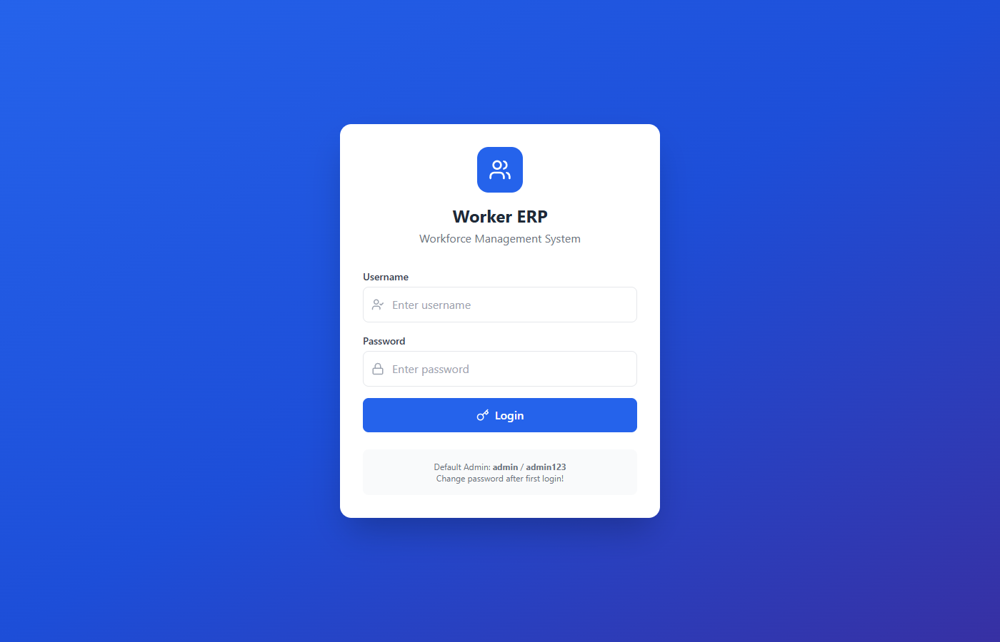
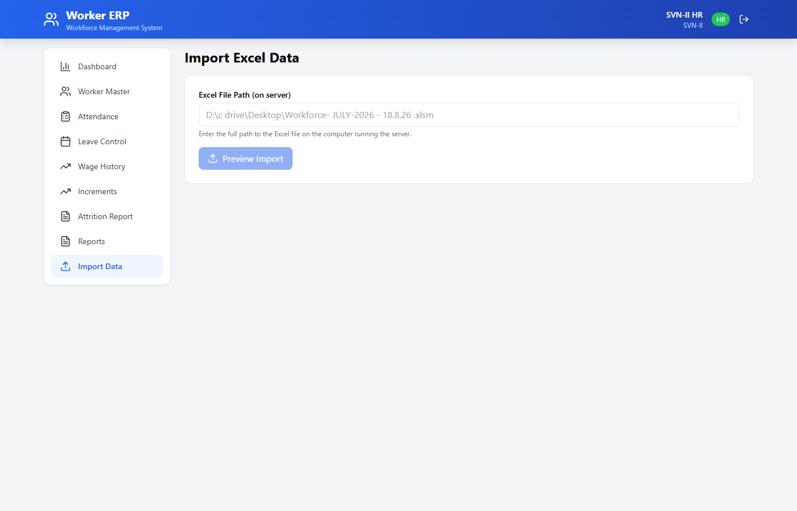
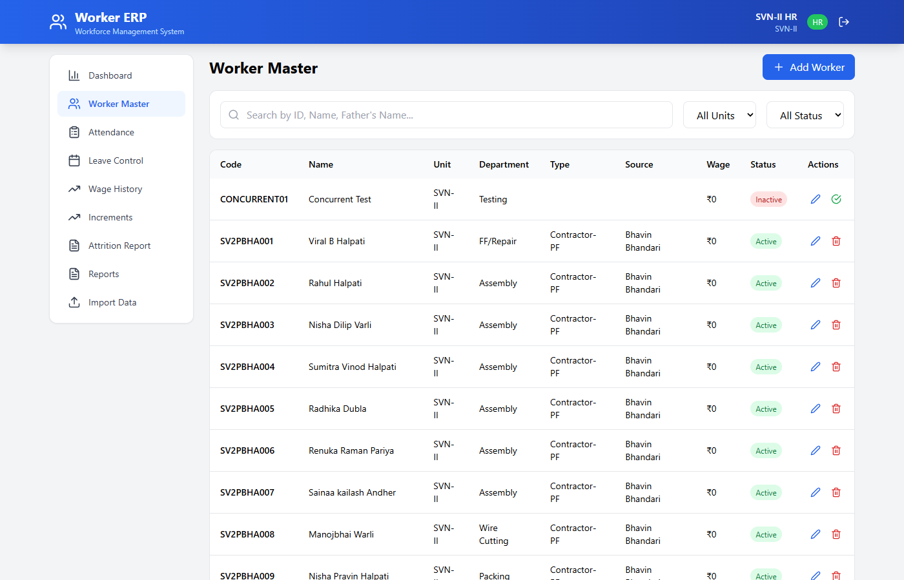
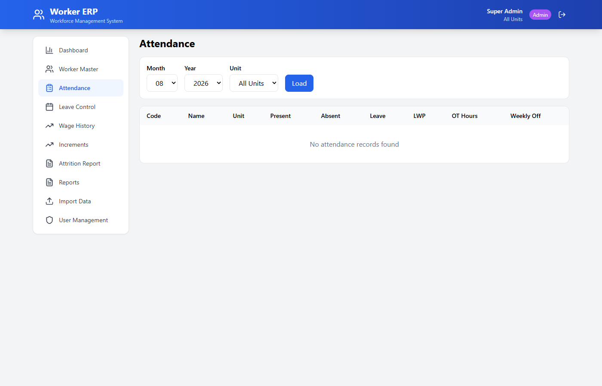
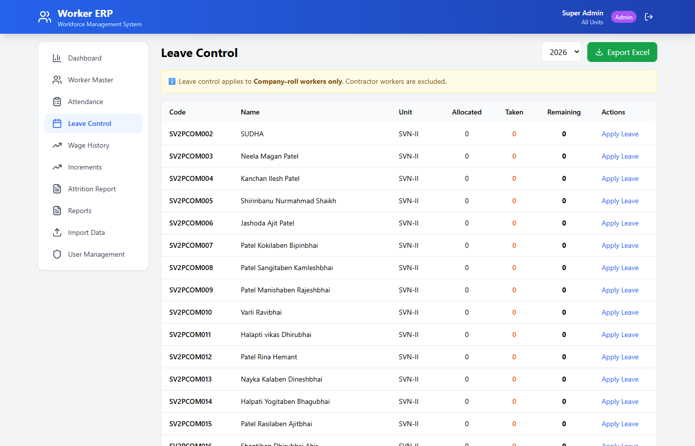
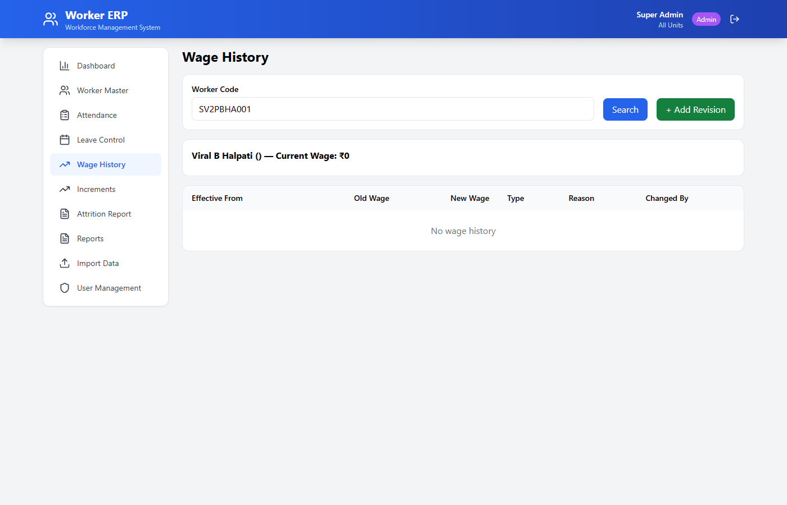
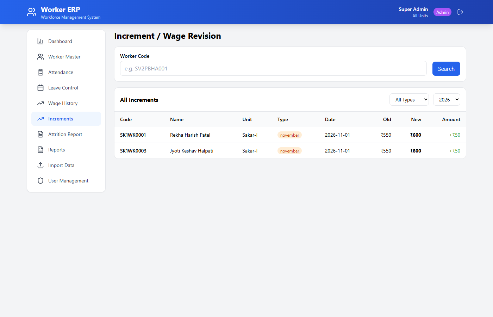
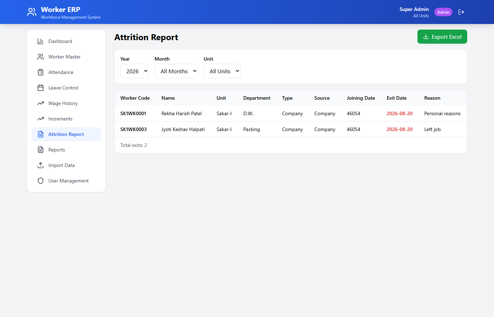
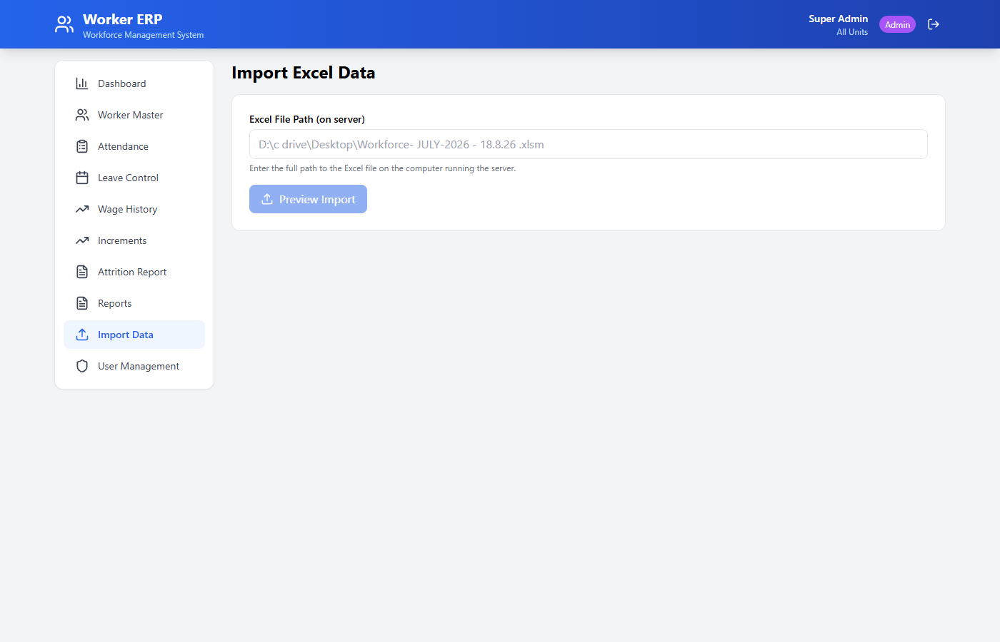

SVN-SAKAR GROUP WORKERFORCE
HR User Manual
Version 2.0
August 2026
Confidential — For Internal Use Only
1. How to Open Workforce ERP
Workforce ERP runs on a central server computer. You access it through a web browser — no software installation is needed on your computer.
What You Need
- Web Browser: Google Chrome or Microsoft Edge (recommended)
- Network: Your computer must be connected to the same company network as the server
Steps to Open
- Open Google Chrome or Microsoft Edge on your computer.
- In the address bar (top of browser), type:
http://192.168.1.31:3001
- Press Enter on your keyboard.
- The Workforce ERP login screen will appear.

Figure 1: Workforce ERP Login Screen
Bookmark this page in your browser for quick access. Press Ctrl+D to bookmark.
The server computer must be turned ON and running for you to access Workforce ERP. If the page does not open, contact your IT administrator.
2. Login
Every HR user has their own username and password. Your login gives you access only to your assigned unit/factory.
Steps to Login
- Enter your Username in the first field.
- Enter your Password in the second field.
- Click the Login button.
- The Dashboard will open showing your unit's data.
What HR Can Access
| Feature | HR Access |
|---|
| Dashboard | ✅ View your unit's data only |
| Worker Master | ✅ Add, Edit, Deactivate workers in your unit |
| Attendance | ✅ View and mark attendance |
| Leave Control | ✅ Apply leaves for company workers |
| Wage History | ✅ View and add wage revisions |
| Increments | ✅ Add May/November increments |
| Attrition Report | ✅ View and export exits |
| Reports | ✅ View and export to Excel |
| User Management | ❌ Only Super Admin can manage users |
Your HR login gives access ONLY to your assigned unit. For example, SVN-II HR can see only SVN-II workers. They cannot see SVN-I, Sakar-I, or Sakar-III workers.
Never share your password with anyone. If you forget your password, contact the Super Admin.
3. Dashboard
The Dashboard is the first screen you see after login. It gives you a quick overview of your unit's workforce.

Figure 2: HR Dashboard showing SVN-II unit data
What Each Section Shows
| Section | What It Means |
|---|
| Total Workers | Total number of workers in your unit |
| Active | Workers currently working (not exited) |
| Inactive | Workers who have left the company |
| Total CTC | Total monthly cost to company for all workers |
| Unit-wise Workers | Bar chart showing workers by factory/unit |
| Contractor-wise | Workers grouped by contractor |
| PF/ESIC Status | How many workers are PF/ESIC eligible |
| Department-wise | Workers grouped by department |
The Dashboard updates automatically whenever data changes. No need to refresh the page.
4. Worker Master
Worker Master is where you manage all worker records — add new workers, edit details, search, and deactivate workers who have left.

Figure 3: Worker Master — list of workers in your unit
4.1 Search for a Worker
- Click on Worker Master in the left sidebar.
- In the Search box, type the worker's code (e.g., SV2PBHA001) or name.
- The list will filter automatically as you type.
4.2 Filter Workers
- Use the Unit dropdown to filter by unit (if you have access to multiple).
- Use the Status dropdown to show Active or Inactive workers.
4.3 Add a New Worker
- Click the + Add Worker button (top right).
- Fill in the required fields: Worker Code, Name, Unit, Department.
- Fill other fields as available: Father Name, Gender, DOJ, DOB, Wage, PF status.
- Click Save.
Worker Code must be unique. If a worker code already exists, the system will show an error. Use a different code.
4.4 Edit a Worker
- Find the worker using Search.
- Click the Edit (pencil ✏️) icon in the Actions column.
- Make your changes in the form.
- Click Update.
4.5 Deactivate (Exit) a Worker
- Find the worker using Search.
- Click the Delete (trash 🗑️) icon.
- Confirm the deactivation.
- The worker status changes to Inactive. Historical data is preserved.
Deactivating a worker does NOT delete their records. All attendance, wage, and leave history remains available for reports.
Important Fields Explained
| Field | Meaning |
|---|
| Worker Code | Unique ID for the worker (e.g., SV2PBHA001) |
| Unit | Factory/plant where the worker works |
| Type | Company, Contractor-PF, or Contractor-Non-PF |
| Source | Contractor name (if applicable) |
| PF Flag | YES = PF applicable, NO = Not applicable |
| Total Wage | Daily wage rate in ₹ |
| Status | Active = working, Inactive = left |
5. Attendance
The Attendance module shows monthly attendance records for all workers in your unit.

Figure 4: Attendance view with month and unit filters
How to View Attendance
- Click Attendance in the left sidebar.
- Select the Month and Year from the dropdown.
- Select your Unit from the dropdown (or leave blank for all accessible units).
- Click the Load button.
Understanding the Columns
| Column | Meaning |
|---|
| Present | Number of days worker was present |
| Absent | Number of days worker was absent |
| Leave | Number of days on leave |
| LWP | Leave Without Pay days |
| OT Hours | Extra/Overtime hours worked |
| Weekly Off | Sundays/holiday offs |
6. Leave Control
Leave Control manages leave balance and leave applications for Company-roll workers only.
Leave Control does NOT apply to Contractor workers. Only workers with Type = "Company" are included in leave management.

Figure 5: Leave Control — shows company workers with leave balances
6.1 Understanding Leave Balance
| Column | Meaning |
|---|
| Allocated | Total leaves given for the year (default: 24) |
| Taken | Leaves already used this year |
| Remaining | Leaves still available (Allocated - Taken) |
6.2 Apply Leave for a Worker
- Find the worker in the Leave Control list.
- Click Apply Leave next to their name.
- A form will open showing the worker's leave balance.
- Select Leave Type: Casual, Sick, Earned, or LWP.
- Enter From Date and To Date.
- Enter the number of days.
- Enter a Reason (optional).
- Click Apply Leave.
If remaining leave is less than the days requested, the system will show an error. The worker must have enough leave balance.
6.3 Export Leave Report to Excel
- On the Leave Control page, click Export Excel button (top right).
- An Excel file will download to your computer's Downloads folder.
- Open the file to view the leave report for all company workers.
7. Wage History
Wage History tracks every wage change for a worker with the effective date. Never overwrite the old wage directly — always use Wage History to record changes.
Do NOT simply edit the worker's wage in Worker Master. Always use Wage History to maintain an audit trail of all wage changes.

Figure 6: Wage History showing all wage changes for worker SV2PBHA001
7.1 View Wage History
- Click Wage History in the left sidebar.
- Enter the Worker Code in the search box.
- Click Search.
- All past wage changes for this worker will be displayed.
7.2 Add a Wage Revision
- Search for the worker first.
- Click + Add Revision button.
- Enter Effective From date (the date from which new wage applies).
- Select Change Type: Revision, May Increment, November Increment, or Mid-Month Revision.
- Enter the New Total Wage (₹).
- Enter Basic Wage, HRA, and Other Allowance (if known).
- Enter Reason/Remarks (e.g., "Annual revision", "Performance bonus").
- Click Save Revision.
Understanding the Wage History Columns
| Column | Meaning |
|---|
| Effective From | Date from which the new wage applies |
| Old Wage | Previous daily wage (₹) |
| New Wage | Updated daily wage (₹) |
| Type | Revision, May Increment, November Increment, etc. |
| Reason | Why the wage was changed |
| Changed By | Which HR user made the change |
The system automatically calculates monthly wages based on the Effective From date. If a wage changes mid-month, only the applicable rate is used.
8. Increments (May / November)
The Increments module is used for annual wage revisions — typically May Increment and November Increment. It also supports special mid-month revisions.

Figure 7: Increment management screen
8.1 Types of Increments
| Type | When Used |
|---|
| May Increment | Annual increment typically given in May |
| November Increment | Mid-year increment typically given in November |
| Special / Mid-Month | Any other wage revision outside the regular cycle |
8.2 Add an Increment
- Click Increments in the left sidebar.
- Enter the Worker Code and click Search.
- Click + Add Increment.
- Select Increment Type: May, November, or Special.
- Enter Effective From date.
- Enter New Wage (₹).
- Enter Reason (e.g., "Annual May 2026 increment").
- Click Save Increment.
The system automatically calculates the increment amount (New Wage - Old Wage) and percentage. You only need to enter the new wage.
8.3 View All Increments
Scroll down on the Increments page to see "All Increments" — a table of all increments across workers. Use the filters to view by type (May/November/Special) and year.
9. Attrition Report (Worker Exit)
When a worker leaves the company, you record their exit. The worker becomes inactive but all historical data remains available.

Figure 8: Attrition Report showing exited workers
9.1 Record a Worker Exit
- Go to Worker Master.
- Search for the worker.
- Click the Edit (pencil ✏️) icon.
- Enter the Exit Date.
- Enter the Exit Reason (e.g., "Resigned", "End of contract", "Personal reasons").
- Click Update.
- The worker status changes to Inactive.
9.2 View Attrition Report
- Click Attrition Report in the left sidebar.
- Select Year to filter exits by year.
- Select Month to filter exits by month (optional).
- Select Unit to filter by factory (optional).
- The report shows: Worker Code, Name, Unit, Department, Type, Source, Joining Date, Exit Date, Reason.
9.3 Export Attrition Report
- Set your filters (year, month, unit).
- Click Export Excel button (top right).
- An Excel file will download with the filtered attrition data.
10. Reports & Excel Export
Workforce ERP provides several reports that can be exported to Excel.

Figure 9: Reports page with available report types
Available Reports
| Report | What It Shows |
|---|
| Worker Master Report | Complete list of all workers with details |
| Unit-wise Report | Workers grouped by unit with counts |
| Contractor-wise Report | Workers grouped by contractor/source |
| Department-wise Report | Workers grouped by department |
| PF/ESIC Report | Workers with PF and ESIC status |
| Attendance Report | Monthly attendance summary |
| Leave Report | Leave balances for all company workers |
| Attrition Report | All exited workers with reasons |
How to Export Any Report
- Click Reports in the left sidebar.
- Click Export Excel on the report you need.
- The Excel file will download to your Downloads folder.
- Open the file in Microsoft Excel.
Reports respect your unit access. SVN-II HR will only see SVN-II data in reports.
11. Import Data from Excel
You can import worker data from an Excel file. The system will add new workers and skip duplicates.

Figure 10: Import Data screen
How to Import
- Click Import Data in the left sidebar.
- Enter the full file path of the Excel file on the server computer (e.g.,
D:\data\workers.xlsx).
- Click Preview Import.
- The system will show: New Workers, Duplicates, Invalid Records, Final Total.
- Review the preview carefully.
- Click Confirm Import to add the new workers.
Import uses the merge approach: new workers are added, existing workers (same Worker Code) are skipped. Your existing data is never overwritten.
The Excel file must contain a sheet named "MASTER_Workers" or "Workers". Column names should match: Worker_Code, Name, Unit, Department, etc.
12. Logout
Always log out when you are done, especially on shared computers.
Steps to Logout
- Click the Logout button (🚪 icon) in the top-right corner of the header.
- You will be returned to the login screen.
- Close the browser tab if you are done.
Always logout before leaving your computer unattended. Your session stays active for 24 hours if you don't logout.
13. HR Do's & Don'ts
✅ Do's
- ✅ Always use Wage History to record wage changes — never overwrite directly.
- ✅ Check Effective From date carefully before saving wage revisions.
- ✅ Verify attendance before finalizing monthly records.
- ✅ Check leave entries for accuracy — ensure correct dates and leave type.
- ✅ Record worker exit properly with exit date and reason.
- ✅ Export and save important reports regularly.
- ✅ Keep your password secure — do not share with anyone.
- ✅ Logout when you are done, especially on shared computers.
❌ Don'ts
- ❌ Do not share your login credentials.
- ❌ Do not delete worker records unnecessarily — use Deactivate instead.
- ❌ Do not overwrite wages directly in Worker Master — use Wage History.
- ❌ Do not apply leave for contractor workers — leave is only for company-roll workers.
- ❌ Do not forget to record exit date when a worker leaves.
- ❌ Do not skip the preview step when importing Excel data.
14. Troubleshooting
| Problem | Solution |
|---|
Page not opening
ERR_CONNECTION_TIMED_OUT |
Check if the server computer is ON. Check if your computer is connected to the company network. Try typing the URL again: http://192.168.1.31:3001 |
Login failed
Invalid credentials |
Check your username and password. Passwords are case-sensitive. Contact Super Admin if you forgot your password. |
| Failed to fetch |
The server may be temporarily busy. Wait 10 seconds and try again. If the problem persists, contact IT. |
| Server unavailable |
The server computer may have restarted. Wait 2-3 minutes for the server to start. If still not working, contact IT. |
| Report not loading |
Try refreshing the page (press F5). If the report still doesn't load, reduce the filter range (smaller date range). |
| Excel export not working |
Check if your browser is blocking downloads. Look for a download bar at the bottom of the browser. Try a different browser (Chrome/Edge). |
| Worker Code already exists |
This worker code is already in the system. Use a different code or search for the existing worker. |
| Insufficient leave balance |
The worker does not have enough remaining leave days. Check their balance before applying. |
If none of the above solutions work, take a screenshot of the error and send it to your IT administrator.
15. Quick Reference Card
Daily Workflow — Quick Steps
1. Open Chrome
→
2. Type URL
→
3. Login
→
4. Dashboard
→
5. Do Your Work
→
6. Logout
Login Credentials
| Unit | HR Username | Password |
|---|
| SVN-I | hr_svn1 | Work@2026 |
| SVN-II | hr_svn2 | Work@2026 |
| Sakar-I | hr_sakar1 | Work@2026 |
| Sakar-III | hr_sakar3 | Work@2026 |
Change your password after first login! Contact Super Admin for password change.
Key Keyboard Shortcuts
| Action | How |
|---|
| Refresh page | F5 |
| Bookmark page | Ctrl + D |
| Open new tab | Ctrl + T |
HR Daily Checklist
- Open Workforce ERP and login
- Check Dashboard for any alerts
- Review and update attendance for the day
- Process any pending leave requests
- Add new workers if any joinings
- Record exits for workers who have left
- Export any required reports
- Logout when done
For technical support, contact your IT administrator or Super Admin.
Workforce ERP v2.0 — August 2026